Sobre mim
Aoba =] Eu sou o Daniel, tenho 15 anos e moro em São Paulo. Sou estudante do ensino médio no Instituto J&F e minha meta é continuar crescendo nessa escola. Nessa página, você vai aprender mais sobre mim!
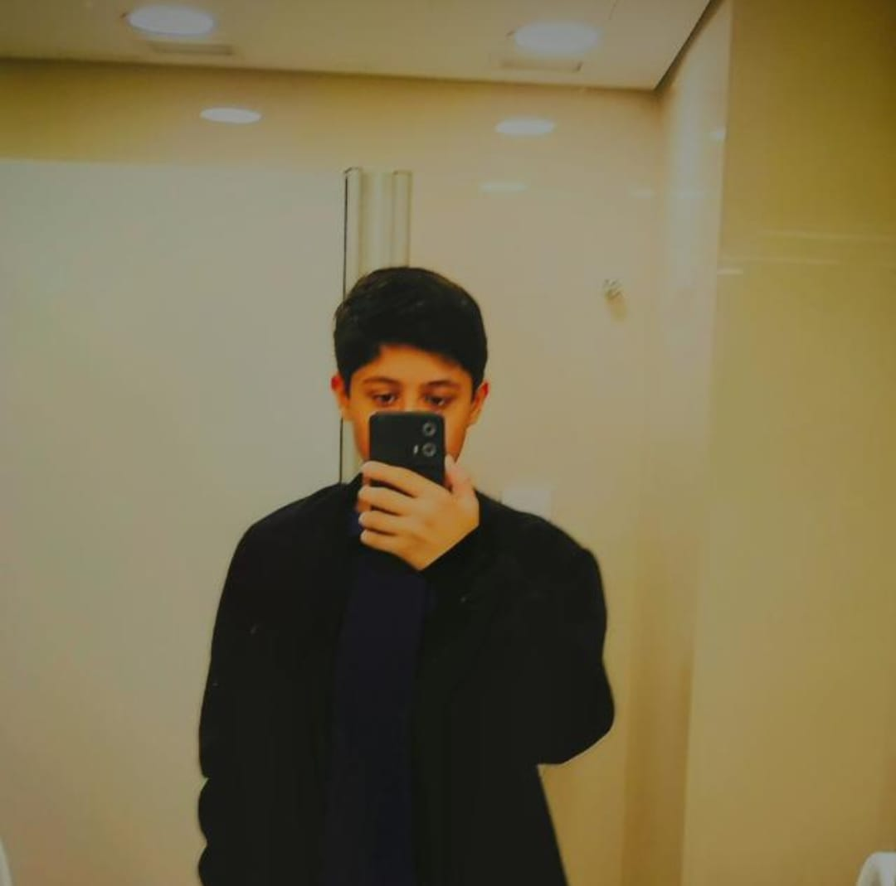
Canções favoritas
- Always - Daniel Caesar
- R U Mine? - Arctic Monkeys
- Sweater Weather - The Neighbourhood
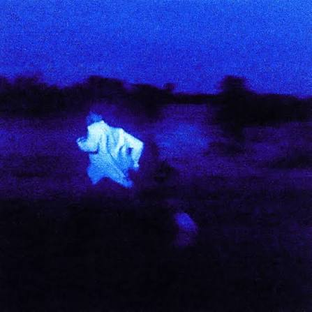
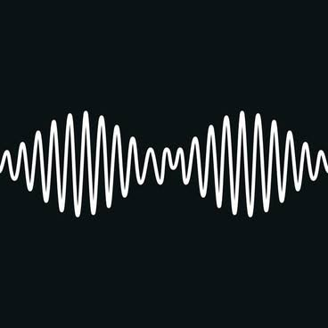
Curiosidades
- Tive meningite e fiquei em coma
- Já conheci o Iberê do Manual do Mundo
- Ouço muito Daniel Caesar
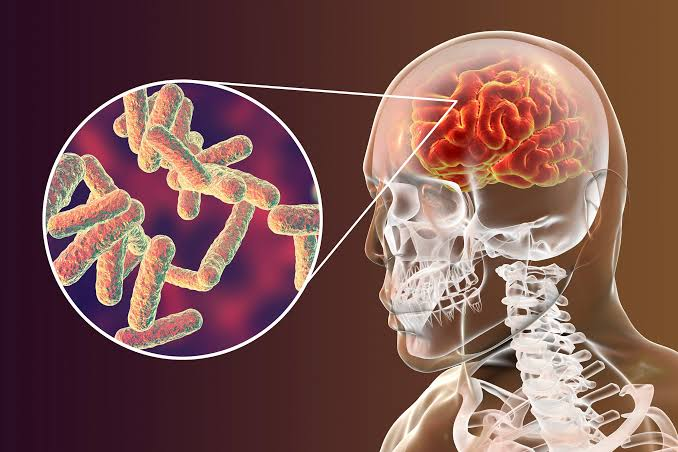
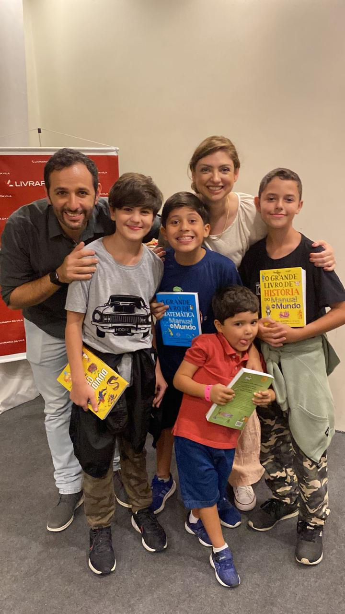
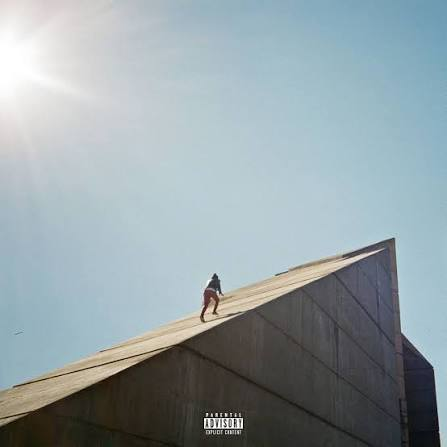
Hobbies
- Cozinhar
- Violão
- Tênis de Mesa
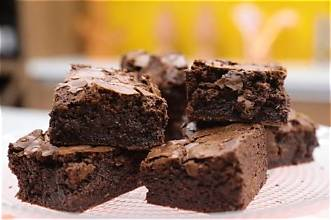
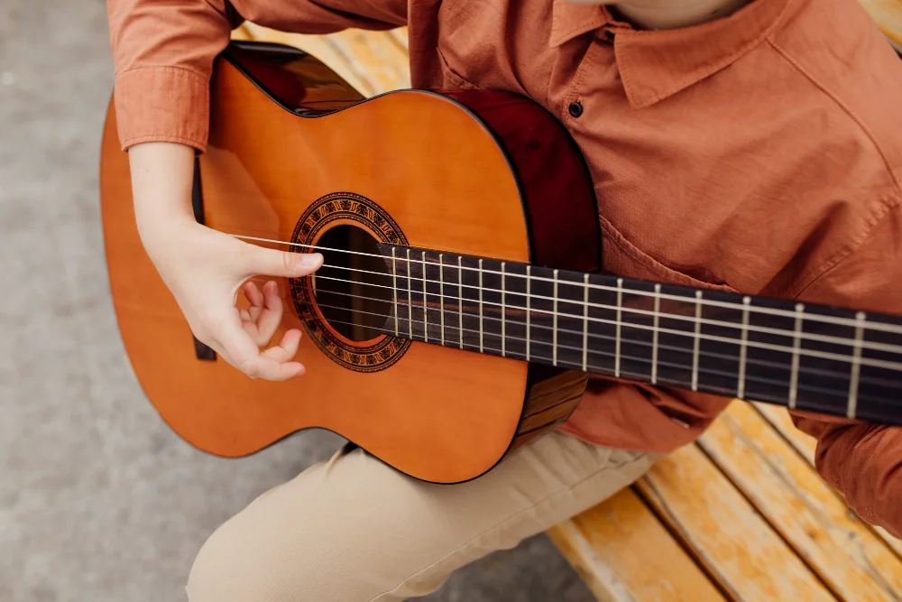
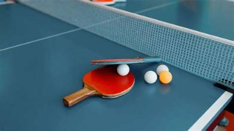
Filmes e Séries
Filmes favoritos
- Homem-Aranha 2 (2004)
- Gente Grande (2010)
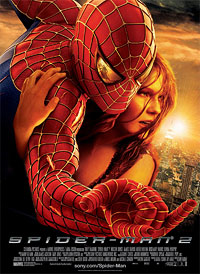
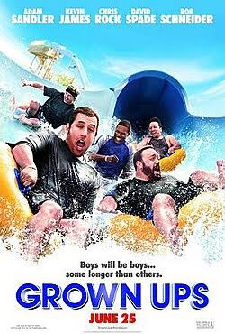
Séries favoritas
- The Office (2005-2013)
- Brooklyn Nine-Nine (2013-2021)
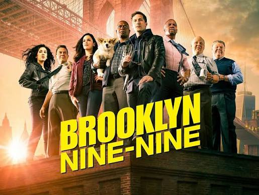
Lugares que já visitei e quero visitar
Já visitei
- Gramado, RS
- Maraú, BA
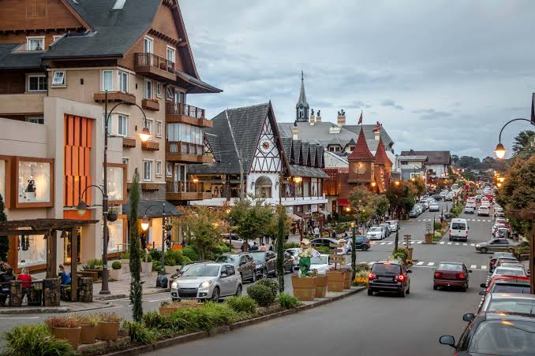
Quero visitar
- Pisa, Itália
- Lençóis Maranhenses, MA
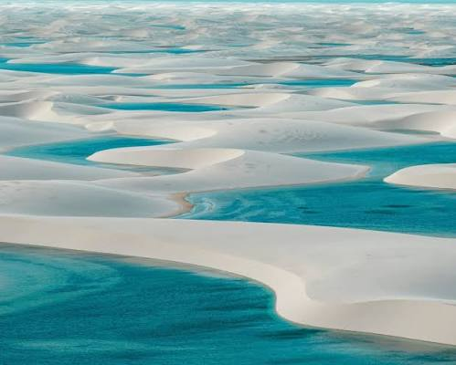
Universos que eu participaria
- Elmore - O Incrível Mundo de Gumball
- Swellview - Henry Danger
- Hawkins - Stranger Things
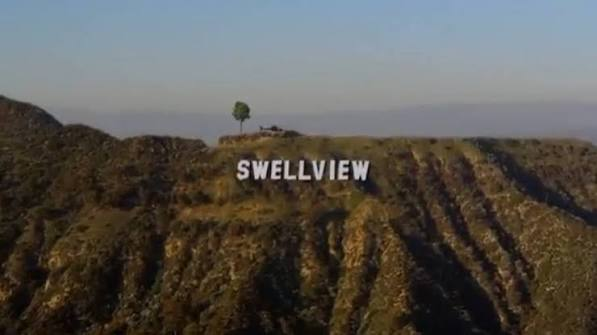
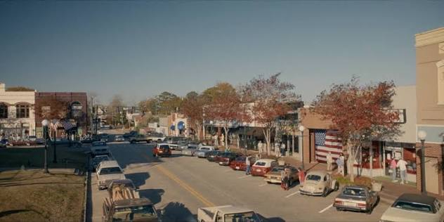